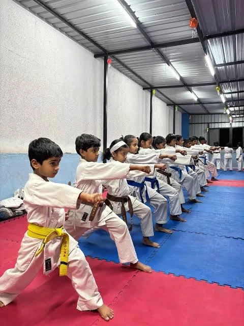
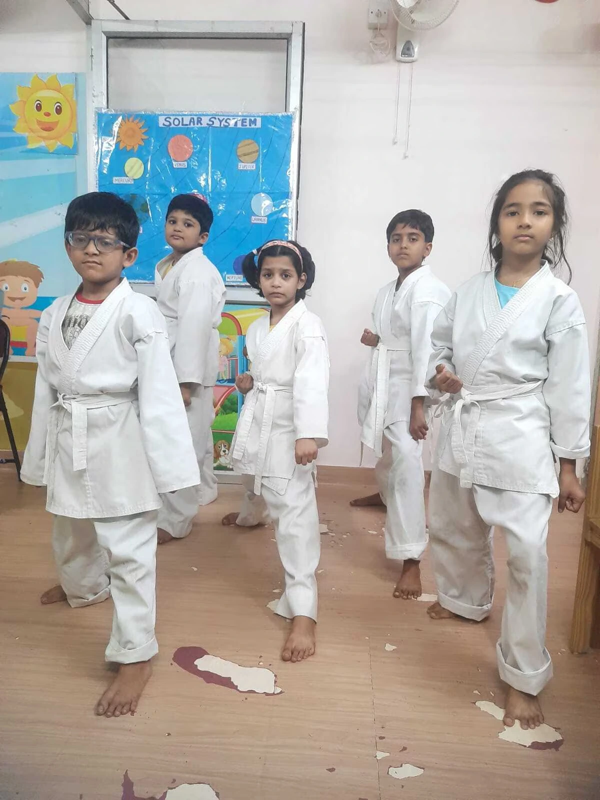

Karate for kids
Karate for growing minds.
Confidence for everyday life.
Personal attention, purposeful training and room to grow. Give your child a practice that develops fitness, focus and self-belief.
Free karate training. No monthly training fees.

Learning step by step
From the first stance to a more demanding technique, training brings together karate skills, fitness and disciplined practice.
Personal attention to each and every student
Individual guidance helps children understand their technique, work on the details and progress from their own starting point.
Basic to advanced karate and fitness training
Build the fundamentals first, then develop more advanced skills alongside strength, movement and physical fitness.
Pure traditional and sports karate training
Learn the discipline and technique of traditional karate while developing the skills used in sport karate.
Training for national and international competitions
Prepare for the demands of competitive karate as skills develop. Participation depends on readiness and the eligibility requirements of each event.
Belt gradation exams every 5 months
Train consistently.
Prepare thoughtfully.
Take the next step.
Belt exams give students a checkpoint in their learning. Ask the academy about the next exam date, syllabus and readiness requirements.
An exam is an assessment—not an automatic belt promotion.

Skills beyond karate
The aim is progress on the mat—and positive habits beyond it.
- Improves concentration
- Practising techniques encourages attention and careful listening.
- Improves confidence
- Learning something new gives children opportunities to try, improve and believe in themselves.
- Personality development
- Respect, discipline and participation support personal growth.
- Improves body conditioning
- Regular movement helps develop strength, coordination and physical fitness.
- Develops health and focus
- An active routine combines physical practice with purposeful attention.
These are training aims. Progress varies with each child and their participation.
Our young learners
Practise alongside other learners. Build discipline through repetition, respect through shared training and confidence through steady progress.
These photographs were supplied by the academy and show the learning environment—not stock models.
About Royal Sports Academy
Enquire for your child
Free karate training in Dharavi and Pratiksha Nagar, Mumbai. Confirm the right batch and session details with the academy before attending.
Enquire for your childThis preview prepares a local enquiry draft. It does not send a message or reserve a place.
Does my child need karate experience?
The programme covers basic to advanced training. Tell the academy about your child’s experience so the instructor can advise on a suitable starting point.
Where are the classes held?
Training centres are Ganesh Vidyamandir School, Dharavi, and Pratiksha Nagar, Mumbai. Confirm the exact meeting point and current timetable before attending.
Are there monthly training fees?
No. Regular karate training is free of charge, with no paid classes or monthly training fees. Ask separately about any uniform, equipment, examination or event requirements; these details have not been supplied.
When are the belt exams?
Belt gradation exams are held every 5 months. Confirm the next exam date and assessment requirements with the academy. Promotion depends on the assessment.
What should I confirm before the first class?
Ask about age suitability, class timings, session duration, clothing, equipment and parent or guardian arrangements. These details are not yet published here.